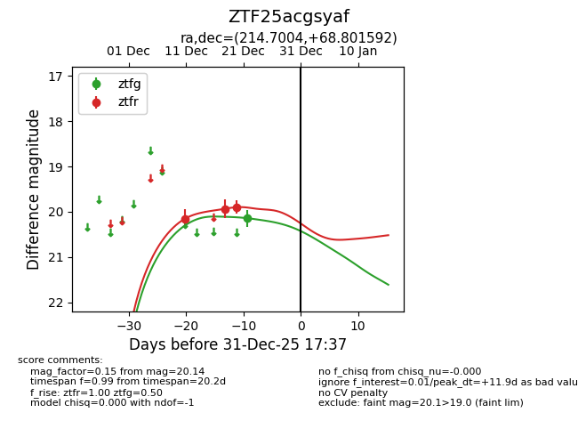
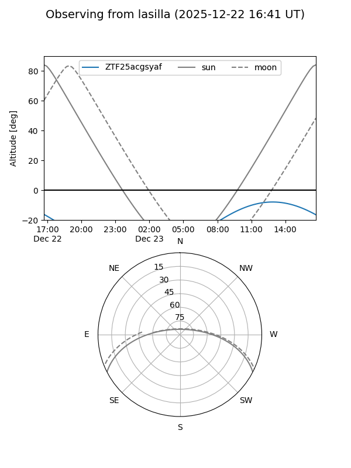
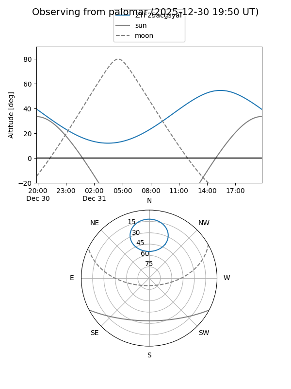
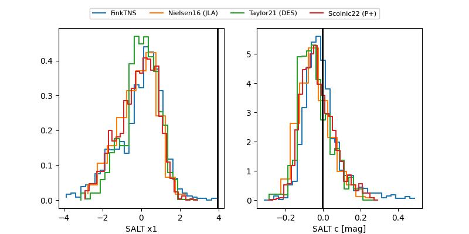

ZTF25acgsyaf
Target ZTF25acgsyaf at 2025-12-24 16:17
Aliases and brokers:
FINK: fink-portal.org/ZTF25acgsyaf
Lasair: lasair-ztf.lsst.ac.uk/objects/ZTF25acgsyaf
ALeRCE: alerce.online/object/ZTF25acgsyaf
alt names
ZTF25acgsyaf (ztf,fink_ztf)
Coordinates:
equatorial (ra, dec) = 214.7004,+68.80159
equatorial (HMS+DMS) = 14:18:48.09,+68:48:05.73
galactic (l, b) = (111.6886,+46.37307)
Flags:
Photometry:
last ztfg=20.14, ztfr=19.90
1 ztfg, 3 ztfr detections
Lightcurve

Visibility


Additional plots
